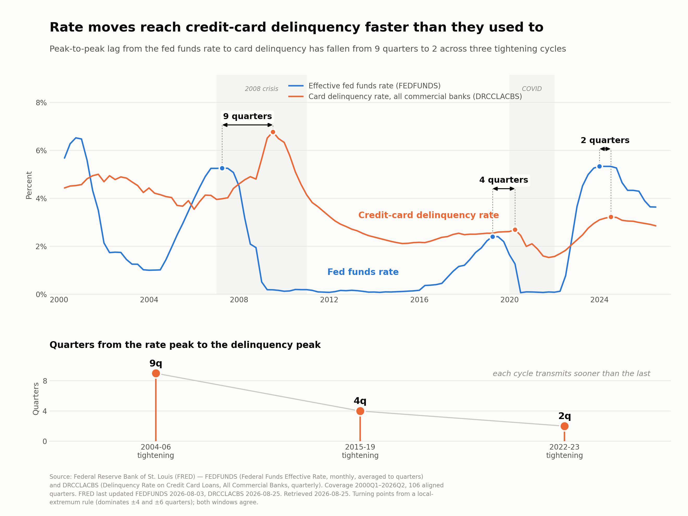

Fed funds changes still lead credit-card delinquency, but the delay is now about two quarters, not the two years the full-sample statistic implies — and the two-year number is an artifact of a single episode.
Run a cross-correlation over all 106 quarters since 2000 and the peak sits at 8 quarters (r = +0.416, p < 0.001). That is the number a quick analysis reports, and it is misleading. The 2008 crisis window is 17% of the observations and carries the entire result: remove it and the 8-quarter correlation falls to +0.216, while the 2-quarter correlation rises from +0.034 to +0.456. Excluding both the 2008 crisis and COVID, the peak moves to 2 quarters (r = +0.409, 95% CI +0.20 to +0.58, n = 76).
The turning points say the same thing, and they say something the correlation does not — the lag has been shortening, monotonically, cycle over cycle:
| Tightening cycle | Fed funds peak | Delinquency peak | Lag |
|---|---|---|---|
| 2004–06 | 2007Q1 (5.26%) | 2009Q2 (6.77%) | 9 quarters |
| 2015–19 | 2019Q1 (2.40%) | 2020Q1 (2.69%) | 4 quarters |
| 2022–23 | 2023Q4 (5.33%) | 2024Q2 (3.22%) | 2 quarters |
This is not one estimate that happens to be noisy. Rolling 40-quarter windows split cleanly in two: windows containing the 2008 crisis put the peak at 8–10 quarters (32 of 63 windows), windows past it put it at 1–3 quarters (26 of 63), and almost nothing lands in between. Two regimes, not one wide error bar. A plausible mechanism — untested here — is that card APRs are near-universally variable and tied to prime, so the transmission runs through the minimum payment within a billing cycle rather than through a refinancing decision.
The second finding matters as much as the first: the timing repeats, the magnitude does not. A regression of delinquency change on rate change at the 2-quarter lag, trained on pre-2022 non-crisis quarters, backtests on 2022Q1–2026Q2 worse than assuming no change at all — MAE 0.458pp against a naive 0.416pp, with 8 of 18 quarters called in the right direction. It missed the 2022–24 surge almost completely, predicting −0.07pp against an actual +0.92pp at peak. The pass-through coefficient is itself unstable: +0.139pp per 1pp of rate move excluding crises, +0.284pp post-2011 — a factor of two apart.
Data. FEDFUNDS (Federal Funds Effective Rate, monthly) and DRCCLACBS (Delinquency Rate on Credit Card Loans, All Commercial Banks, quarterly), from FRED — Federal Reserve Bank of St. Louis. 2000Q1–2026Q2, 106 aligned quarters, no missing quarters and no nulls. The monthly rate is averaged into quarters, not sampled, so a quarter's rate is the rate that quarter actually carried. FRED last updated FEDFUNDS 2026-08-03 and DRCCLACBS 2026-08-25; retrieved 2026-08-25.
Method. Levels of both series trend and are strongly autocorrelated — correlating them directly measures shared trend, not response (levels r = +0.209, which is close to meaningless here). The analysis works in 4-quarter changes: differencing removes the trend and the 4-quarter window absorbs the Q1 seasonality in card charge-offs. Lags were then estimated three independent ways — cross-correlation, rule-based turning points, and rolling windows — because the first alone is not sufficient to identify the lag.
Cross-correlation, by sample.
| Sample | n | r at 2q | r at 8q | Peak |
|---|---|---|---|---|
| All observations | 100 | +0.034 | +0.416 | 8q |
| Excluding 2008 crisis | 84 | +0.456 | +0.216 | 2q |
| Excluding COVID only | 92 | −0.015 | +0.452 | 8q |
| Excluding both | 76 | +0.409 | +0.266 | 2q |
A caveat on precision. On the crisis-excluded sample, every lag from 0 to 14 quarters is statistically significant, with r moving only between +0.27 and +0.41. The peak at 2 quarters is real but broad — the honest reading is "the response begins almost immediately and is strongest within two to three quarters," not "exactly two." The turning-point and rolling-window evidence is what makes the 2-quarter estimate identifiable at all; the correlation on its own could not distinguish 2 from 6.
Turning points were identified by rule, not by eye: a local extremum that dominates a ±4-quarter window, cross-checked at ±6. Both windows return the same set. On the trough side (rate trough → delinquency trough) the gaps are 8, 4 and 5 quarters — the same shortening, less cleanly, and the current easing cycle's delinquency trough has not been observed yet.
Amplitude, in contrast, is roughly proportional at cycle scale. Peak-to-trough delinquency move divided by the fed funds move: 0.25 (2004–06), 0.21 (2015–19), 0.29 (2022–24). Three observations is a prior, not a model, but ~0.25pp of delinquency per 1pp of rate move is a usable sanity check on a stress scenario — even though, as the backtest shows, the same relationship does not survive being run quarter by quarter.
Where the current cycle stands. Fed funds peaked 2023Q4 at 5.33% and delinquency peaked 2024Q2 at 3.22% — a 2-quarter lag, exactly on the current-regime estimate. Fed funds is now 3.63% (2026Q2), 1.70pp off its peak. Delinquency is 2.85%, 0.37pp off its peak and falling for eight consecutive quarters.
Limits. DRCCLACBS is an all-commercial-banks aggregate and is not a substitute for our own book, whose mix and underwriting differ. Three cycles of quarterly data is thin evidence for a claim about regime change. Nothing here is causal: fed funds co-moves with unemployment and credit supply, neither of which is controlled for, so part of what reads as rate transmission is very likely labour-market transmission. And DRCCLACBS publishes roughly a quarter in arrears, so the most recent point will revise.